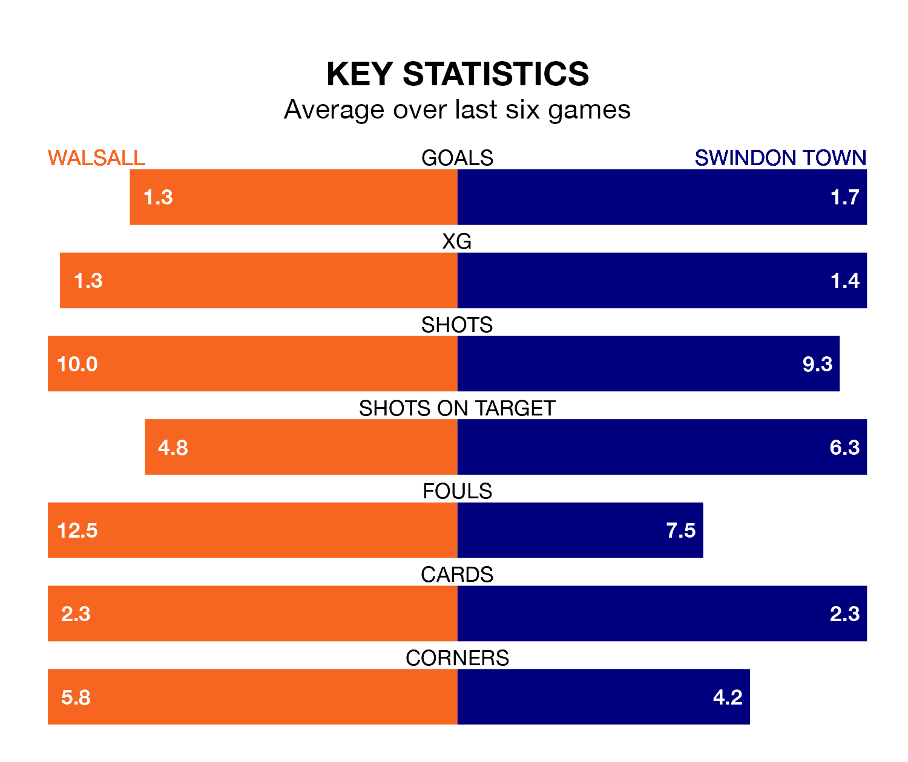

Walsall host Swindon Town on Tuesday at the Poundland Bescot Stadium in EFL League Two.
In their last league match, on Saturday, Walsall lost to Notts County 3-1 at home.
Swindon won, 3-2 at home against AFC Wimbledon, with Aaron Drinan scoring their goals.
With 73 goals in 43 games so far this season, Swindon are scoring more than average in the league with 1.7 goals per game. But they are conceding more than average too, letting in 76 goals at a rate of 1.8 per game.
Walsall, meanwhile, are average scorers, with 1.5 goals per game. They have also conceded 1.5 goals per game.
In the last 10 years, Walsall and Swindon have played each other on 14 occasions. Walsall won four of them, Swindon seven, and they drew three times.
On average, the Saddlers scored 1.1 goals and the Robins 1.8 in those matches.
Their last meeting was on September 16, when Swindon won 2-0 at home.
Town are 19th in the table after 43 games, of which they have won 14 and drawn 11, earning 53 points.
The Saddlers are eight places ahead of the Robins in 11th, with 17 wins and 11 draws putting them on 62 points.
In Daniel Kemp, the away side have one of the league's most on-form strikers so far this season. He has notched 17 goals in 44 appearances, to sit seventh in the scoring charts.
His goal rate of one every 196 minutes is quicker than that of Isaac Hutchinson, the hosts' top scorer with a goal every 330 minutes, and a total of 11 goals in 43 games.
Walsall are in mixed form in EFL League Two, with two wins and a draw from their last six games.
With three wins and three losses over that period, Swindon's form is slightly better – they have taken nine points from 18, compared to Walsall's seven.
Updated: 11:31 (UTC), 15/04/24